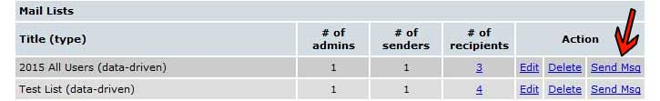

Working with Mailing Lists: {{mlpanel.msg}}
Mailing lists are an inexpensive and very efficient way to improve the communications in your community. They allow you to do mass emails using the email addresses stored in the Homeowners Directory or User Records. You can build different lists for different purposes (e.g. an All Homeowners list, a list of committee members, a list of Board members, etc.).
Like other Features, you can create a button or embedded link that goes to the Mailing List Feature itself, which will display the individual user’s available lists. This would be used if you want to give your members the capability to use a mailing list. As an admin, you also have the capability to have 'admins only' mailing list access. The Mailing List feature requires a user to be logged on, because individual users are granted access to specific lists at the time you build them.
Lists can be built from the Homeowners Directory, or the Users Records by selecting specific recipients, or can be “data driven” which finds all the email addresses for you (very handy for all-resident lists). If you are using the regular list type, in which you select the specific recipients, you will typically select from the User Records because residents can change, or even remove their email addresses in the Homeowners Directory. The information in the User Records is only available to site administrators.
Like other Features, you can create a button or embedded link that goes to the Mailing List Feature itself, which will display the individual user’s available lists. This would be used if you want to give your members the capability to use a mailing list. As an admin, you also have the capability to have 'admins only' mailing list access. The Mailing List feature requires a user to be logged on, because individual users are granted access to specific lists at the time you build them.
Lists can be built from the Homeowners Directory, or the Users Records by selecting specific recipients, or can be “data driven” which finds all the email addresses for you (very handy for all-resident lists). If you are using the regular list type, in which you select the specific recipients, you will typically select from the User Records because residents can change, or even remove their email addresses in the Homeowners Directory. The information in the User Records is only available to site administrators.
To Build a Mailing List
Select the Mailing Lists option from the Features panel and select the Manage link. If it is not enabled, just select the “Enable” link, then select the “Manage” link.
Once you have made that selection, you will see a screen similar to the one shown below:
To create a new list, select the “Create New Regular Mailing List” link or to create a “data driven” list, select the “Create New Data-Driven Mailing List” link. The # of recipients column will now be a blue link- click that link to view the recipients for that mailing list (in a pop up window). You will also be able to export that data (name and email address) into a CSV file (generally used in Microsoft Excel).You will see a screen similar to the one shown below: This is the top portion of the screen. This portion is the same for both “regular” and “data driven” lists. Enter a title for your list in the “Title” field, e.g. “All Tennis Players”. Note: The name you assign to the list will appear on the recipient’s email, so make sure your name is meaningful to your residents.
You can optionally assign a list administrator to this list. This feature allows the selected individual or individuals to maintain the list. They will see a “Manage” button when they access their Mailing Lists page. An administrator always has access to the list through the administrator’s panel so there is no need to assign the system administrators to the list. All of the selection boxes work the same way. You select the individual in the box and then select the “Add new user(s)” button. Multiple selections are allowed. You can select sequentially by selecting the first person and Shift/Clicking the last person. You can also select by using Ctr/Clicking which selects multiple, non-sequential individuals.
Next, select those individuals who are empowered to send emails with this list. Only those people will see the list on their Mailing Lists page. The exhibit below is the sender setup portion of the mailing lists page:
Regular List Recipients
For “regular” mailing lists you decide whether to make your selections from the User Records or the Homeowner’s Directory. These are the individuals that will receive the email. Only those homeowners with email addresses in the file are displayed.
When you are finished making all the selections on the screen, scroll back to the top of the screen and select “Save and Return” next to the title field. Once you have a list built, you and/or the list administrator can access (manage) it to add new senders/recipients or delete recipients.Data Driven Recipients
The exhibit below is the bottom portion of the “data-driven” lists page. For “data-driven” lists you decide whether the system should make its selections from the User Records, the Homeowner’s Directory, or both, a user group, or a building/section (managed via the home records section). You can select the user group or building/section from the white selection box. User groups are created in the 'features' tab (and are only available in the extended package). As the system is processing the records, duplicate addresses are eliminated (so only one email will be sent to each address).Deleting an Entry
Below is an example of deleting a record form the recipients list.
Notice the recipient to be deleted has been checked. To delete that record, select the “Remove selected user(s)” button.
Using the Mailing List
When a user logs on and selects the Mailing List page, they are presented with a screen similar to the one shown below
These are the lists in which this user has been defined as a “sender”. Each of the lists is a link and, when selected, causes a screen similar to the one shown below to be displayed.
The system administrator can go directly to the mail page for any list by selecting “Send Msg” on the Mailing Lists feature page (on your admin panel, click the Features tab, then click the Manage link for the mailing list feature to see the screen below). Enter a subject, enter the text, format the text with the page area editor, and select “Send.”

Use of the page area editor’s buttons is explained in detail in the “Page Area Editor” guide. We also recommend that you – as the administrator – have a list built for testing purposes that sends the email to you. That way you can make sure it is readable before you send it to the
entire list.
Mailing List Template System
You will now be able to create/save/use mailing list templates or drafts when working with this feature. To create a template (draft), just create a mailing list message as you normally would. Insert photos, formatting, etc as necessary. Then, scroll down and you'll see some choices in the sending area:
Obviously, you can either 'send' the message right away, or 'discard' it if you no longer want to send. But you can also 'send and save template'- which will send the message right away and allow you to save a draft for future use, as well as 'save template only'- which allows you to save the draft without sending right at that moment. When saving any template, you'll be able to give it a title and description (so you'll know what it's for in the
future), as well as either save it as a new template or overwrite an existing template:
 When an admin or authorized sender goes to send a message, they'll see a link just above the 'subject' field for 'Choose Mailing List Template'. Click that link and you'll see a screen similar to the one below:
The Global Options will be templates we've created for your use- feel free to use them as you see fit. The My Options templates will be ones you've created and saved. Just select one of the templates and click the 'select' button to use that template. You'll be taken back to the main mailing list sending screen where you'll be able to edit any of the content within the template before sending (remember to customize the template text and insert your own images if you'd like).
When an admin or authorized sender goes to send a message, they'll see a link just above the 'subject' field for 'Choose Mailing List Template'. Click that link and you'll see a screen similar to the one below:
The Global Options will be templates we've created for your use- feel free to use them as you see fit. The My Options templates will be ones you've created and saved. Just select one of the templates and click the 'select' button to use that template. You'll be taken back to the main mailing list sending screen where you'll be able to edit any of the content within the template before sending (remember to customize the template text and insert your own images if you'd like).If you want to delete a template, just click the blue 'delete' link for that line.
Message Attachments
The system now allows for up to 3 files to be attached to a mailing list message- see below for an image of this option- this area will appear below the message text entry field.
You can use the 'browse' button to attach a file that has not been uploaded to the site, or use the drop down list to the right of the 'browse' button to attach a file that has already been uploaded to the site via your documents feature.Note that there is a 5mb total size limit on mailing list attachments
Message Footers
The system will create two different footers for messages, depending on definitions in the settings in the mailing list properties section.Footer for the Authorized List Senders:
 Footer for everyone else:
The first footer above allows any user authorized as a “sender” on the list to reply to the entire list (to correct an error or add supplemental information, for example). All other recipients of the message do not have that capability. They will see the second footer above.
Footer for everyone else:
The first footer above allows any user authorized as a “sender” on the list to reply to the entire list (to correct an error or add supplemental information, for example). All other recipients of the message do not have that capability. They will see the second footer above.
Managing Mailing List Membership from the Users Screen
As of July 2013, site admins can also manage mailing list membership via the 'users' tab on their site's admin panel. Just click to edit any user and scroll to the bottom of their edit screen to see this option:Click the edit link and you'll see the screen below. You'll be able to choose any existing mailing list and add this user to it. You can also remove the user from any mailing list on this screen. When you're done, just click the 'save' button: